Biomedical radar
High-sensitivity microwave and millimeter-wave systems for contactless cardiograms, cardiac timing and cardiopulmonary activity detection.
BIOMEDICAL RADAR · MULTIMODAL SENSING
Postdoctoral Fellow, City University of Hong Kong
Chief Scientist & Co-founder, PetHealthAI
Understanding life through
the signals we cannot see.
I develop microwave and millimeter-wave sensing systems that reveal fine-grained physiological activity. My work connects radar hardware, signal processing and machine learning for human and animal health monitoring.
I work with Prof. Yongxin Guo at the State Key Laboratory of Terahertz and Millimeter Waves, City University of Hong Kong.
| Postdoctoral Fellow at Department of Electrical Engineering and advised by Prof. Yongxin Guo | (Jan., 2025 - present | |
| Visiting Ph.D. at Department of Electrical and Computer Engineering and advised by Prof. Yongxin Guo | (Dec., 2023 - May, 2024) | |
| D.Eng. in Electronic and Information Engineering and advised by Prof. Changzhan Gu | (Apr, 2021 - Dec., 2024) | |
| Audio algorithm engineer in 2012 Lab | (May, 2020 - Apr, 2021) | |
| M.S. in Electronic science and technology and advised by Prof. Lixin Ran | (Sep, 2017 - Mar, 2020) | |
| B.S. in Electronic information engineering | (Sep, 2013 - June, 2017) |
01 / RESEARCH
High-sensitivity microwave and millimeter-wave systems for contactless cardiograms, cardiac timing and cardiopulmonary activity detection.
Spatiotemporal resolution optimization, electromagnetic interaction with biological tissues, and radar demodulation for fine-grained physiological signals.
Radar and acoustic signal processing, data fusion and machine learning for sleep monitoring, animal vital signs and personalized health management.
2025–2026 · PI
HK Tech 300 Seed Fund · SF202503086 · July 2025–Feb. 2026
2025–2026 · PI
HKSTP IDEATION Programme · Partner-25-1441 · Aug. 2025–March 2026
2023–2024 · PI
IEEE MTT-S · High-sensitivity radar systems and robust baseband demodulation.
2022–2023 · Participant
China Pacific Insurance–Shanghai Jiao Tong University Joint Laboratory.
02 / PUBLICATIONS
Journal articles and selected conference papers. Accepted papers are indicated where publication details are forthcoming.
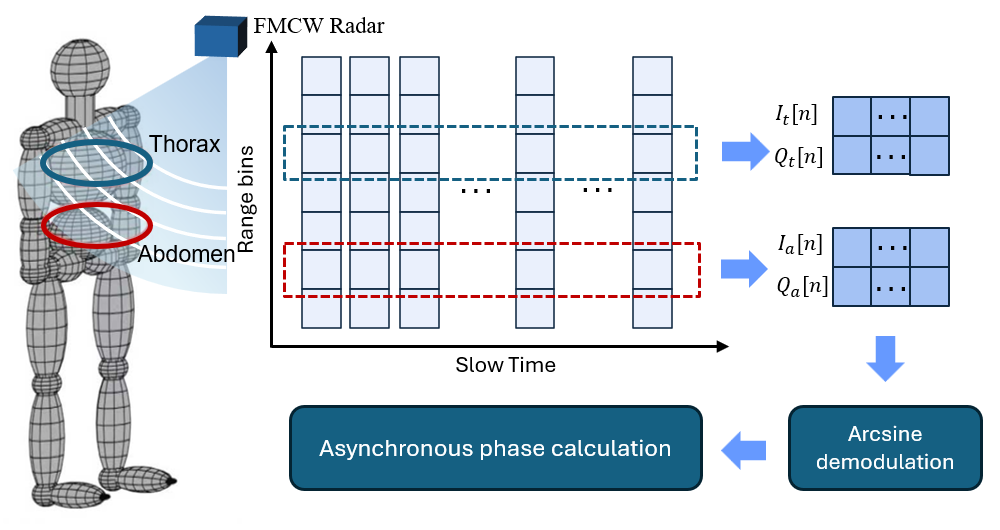
IEEE Transactions on Microwave Theory and Techniques, 74(5), 4625–4637, May 2026
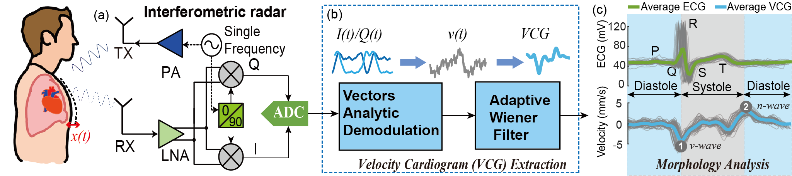
Science China Information Sciences, 69, article 122302, 2026
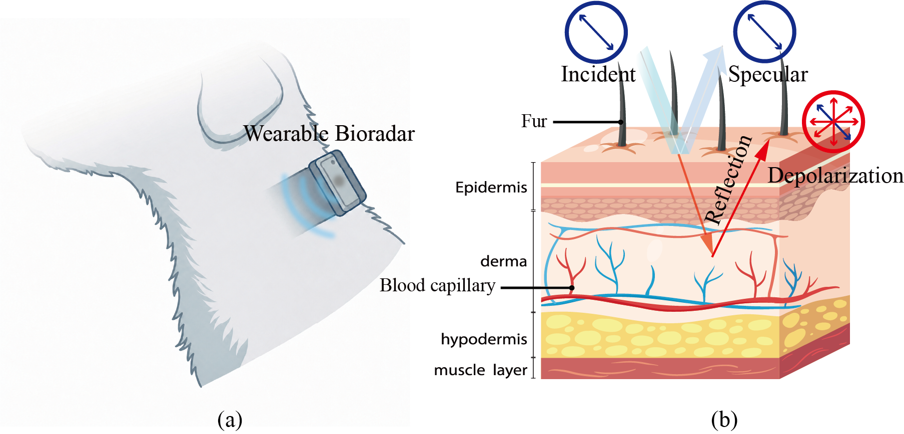
APMC 2026 · Late Breaking News (LBN) paper
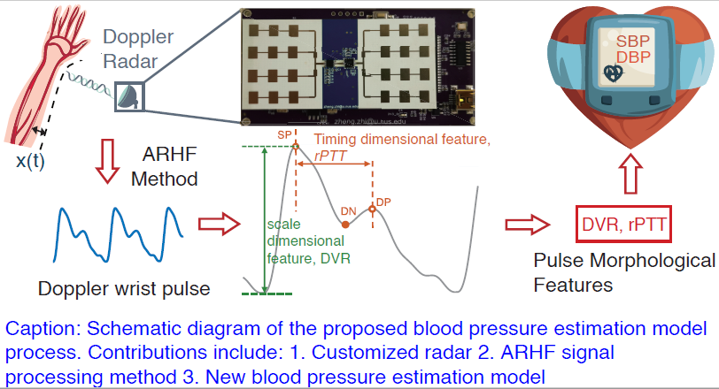
IEEE Transactions on Microwave Theory and Techniques, 73(8), 4273–4285, Aug. 2025
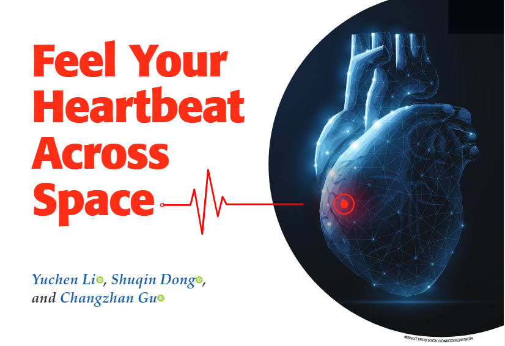
IEEE Microwave Magazine, Dec. 2024
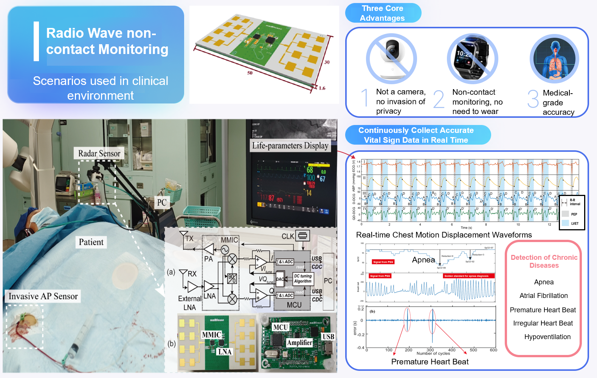
IEEE Open Journal of Engineering in Medicine and Biology, 2024
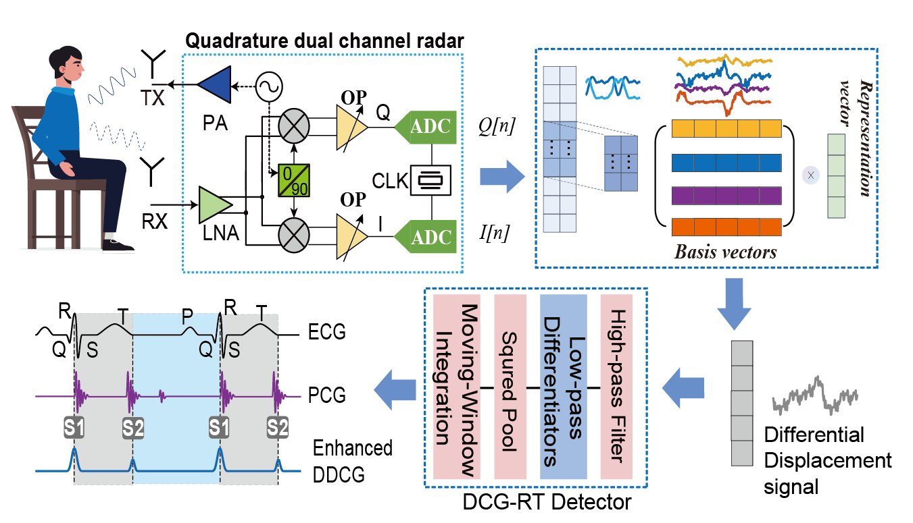
IEEE Transactions on Microwave Theory and Techniques, 2024
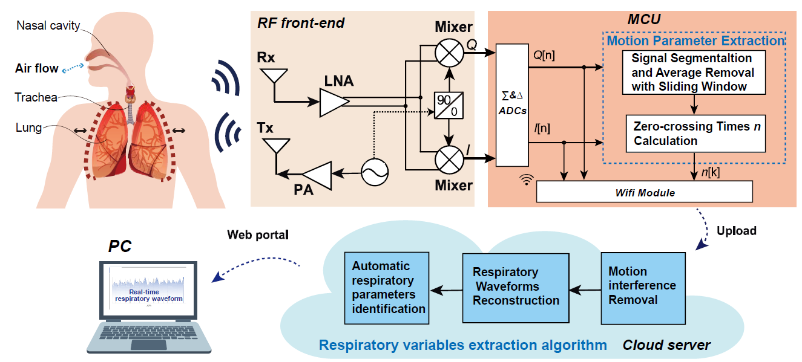
IEEE Internet of Things Journal, 11(11), 19937–19948, June 2024
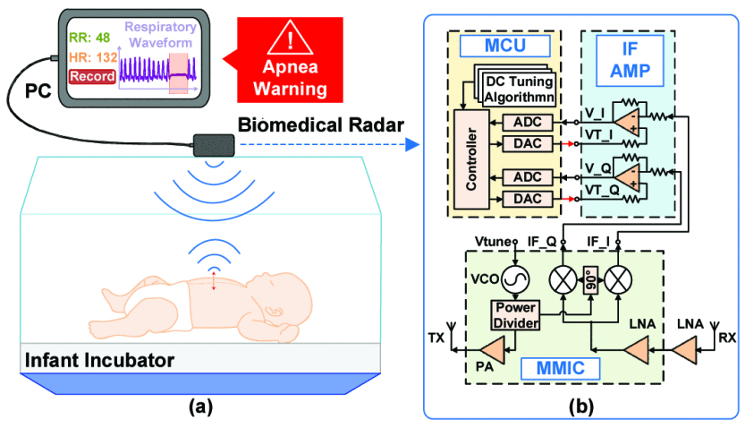
IEEE Transactions on Biomedical Engineering, 71(3), 1022–1032, March 2024
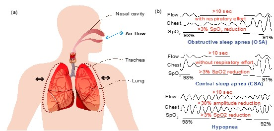
15th Global Symposium on Millimeter-Waves & Terahertz (GSMM), 148–150, 2024
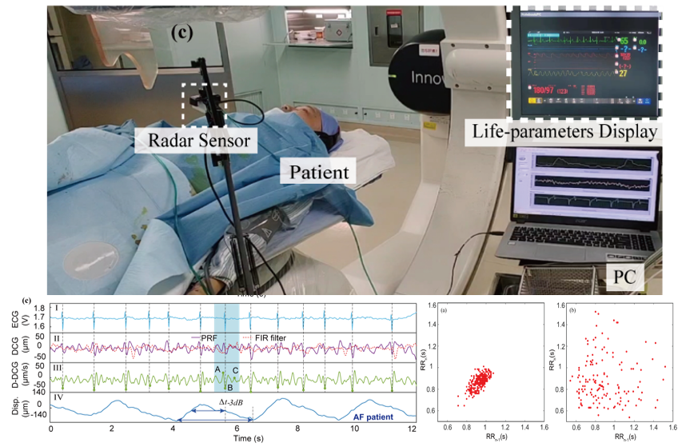
IEEE Transactions on Microwave Theory and Techniques, 71(1), 71–82, Jan. 2023
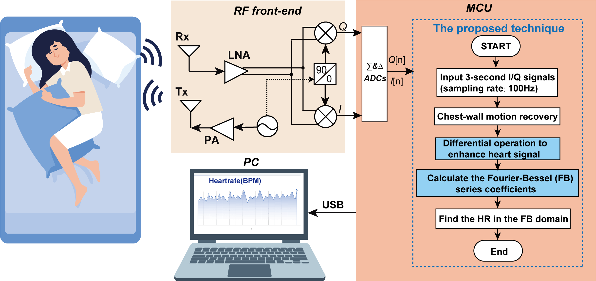
2023 IEEE/MTT-S International Microwave Symposium - IMS 2023
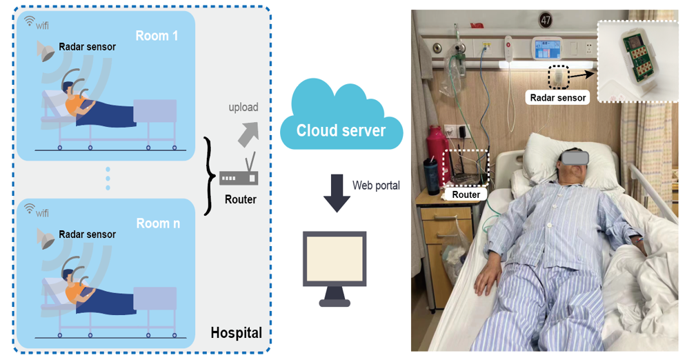
2023 IEEE MTT-S International Wireless Symposium (IWS)
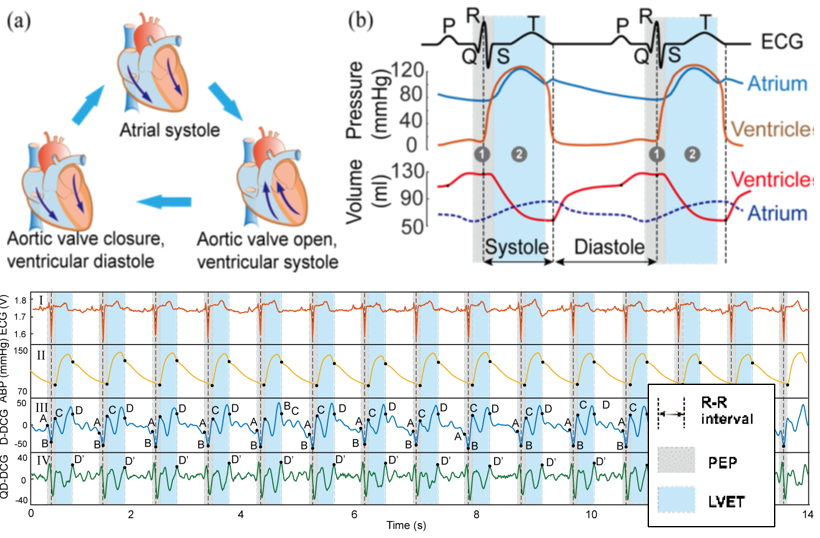
IEEE Microwave and Wireless Components Letters, 2022
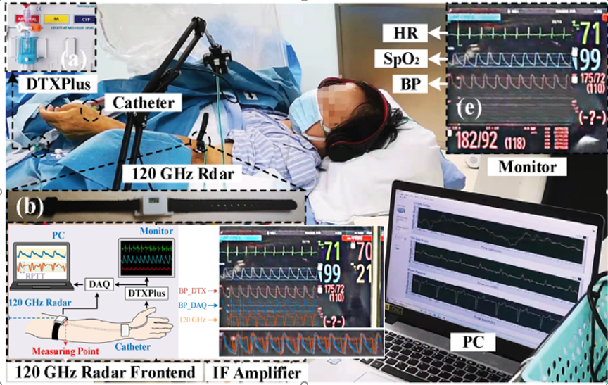
2022 IEEE/MTT-S International Microwave Symposium (IMS 2022)
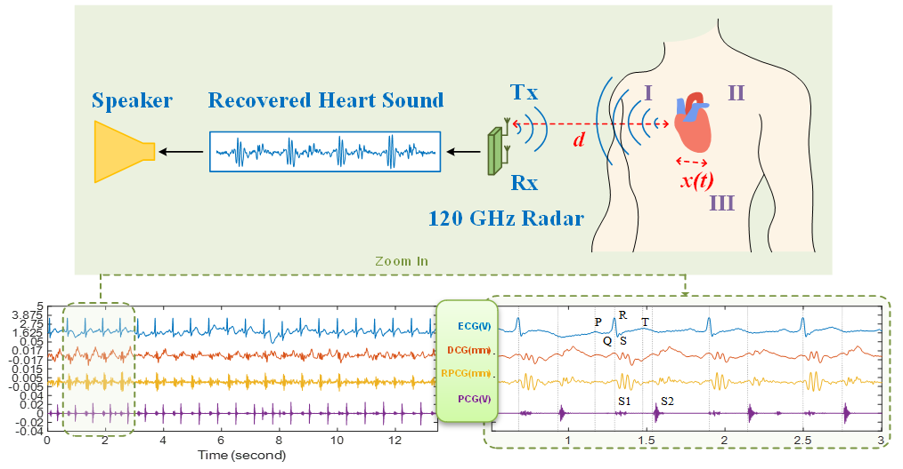
2022 IEEE MTT-S International Wireless Symposium (IWS)
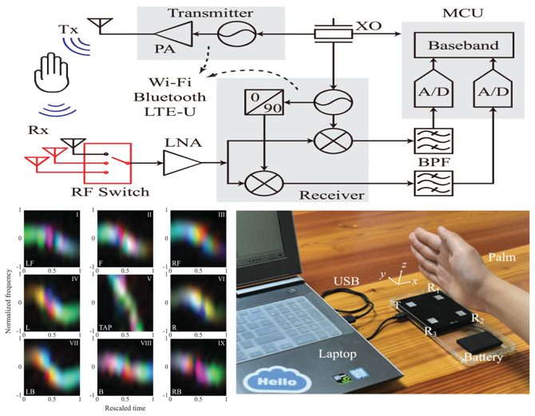
IEEE Transactions on Microwave Theory and Techniques, 2021
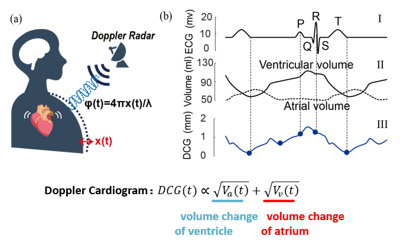
IEEE Transactions on Microwave Theory and Techniques, 2020
04 / RECOGNITION
Team leader
Innovation and entrepreneurship
IEEE MTT-S
China Association for Science and Technology · inaugural cohort
IEEE Instrumentation and Measurement Society
IEEE MTT-S
IEEE MTT-S International Wireless Symposium
First National Digital Health Innovation Application Contest · team rank 3
CAAI International Conference on Artificial Intelligence
Ruijin Hospital & Shanghai Artificial Intelligence Laboratory
Master’s / doctoral studies
Huawei · 2012 Laboratory
IEEE MTT-S International Wireless Symposium
Xidian University
05 / COMMUNITY
High-Precision Microwave Physiological Dynamics Signal Detection: From Far-Field to Near-Field.
A Novel Circuit Design for Direct Current Offset Cancellation in Interferometric Radar System.
Biomedical Radars for Monitoring and Diagnosis of Respiratory and Cardiovascular Diseases.
Reviewer for journals including:
06 / TRANSLATION
Shuqin Dong, Zhaojin Guo, Li Luv, Kai Liu, Yongxin Guo · Application No. 64/051,411.
Shuqin Dong, Lixin Ran · CN110115585A · Aug. 13, 2019.
Yi Zhang, Shuqin Dong, et al. · IET · ISBN 9781785617607 · Co-first author.
IN THE NEWS
A LITTLE MORE ABOUT ME
I enjoy running, tennis and playing guitar. I completed the 2023 Shanghai Half Marathon.
shuqdong@cityu.edu.hk ↗